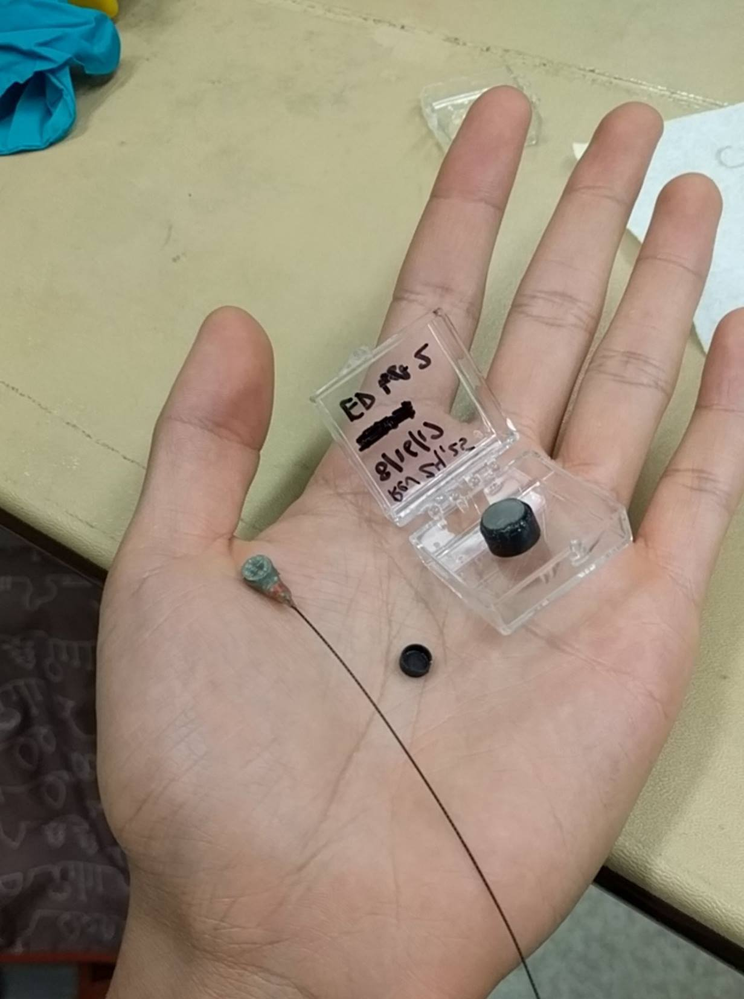
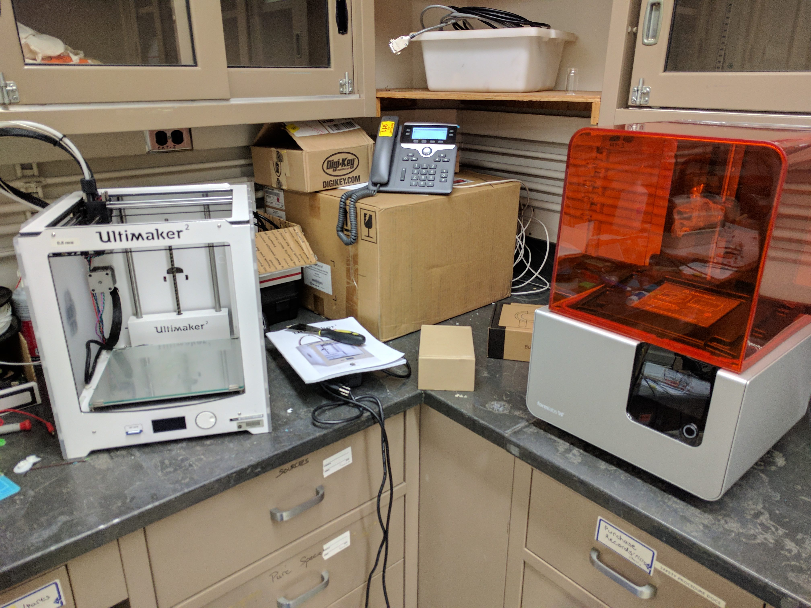

Bird Tracking Tag Batteries


I started my internship at NASA working on a passive life support system for use in spacecrafts. This involved designing and testing structures which would be coated in a catalyst that would convert H2O and CO2 into O2 and useful hydrocarbons. My job was to come up with structure with high surface area to volume ratio that would promote highly turbulent flow across the catalyst while it is also exposed to UV light and moisure. I explored and researched various designs including foldable structures to reduce volume during transport and passive microchannels to move water around the structure in microgravity. Because of changes in the scope and direction of the project not long into my internship, I was moved to another group working on designing minature lightweight batteries for bird tracking tags.
The goal was to create tracking tags that weigh less than 10% of the animal's weight. The majority of the weight comes from the battery, so our task was to design a lightweight battery and tag package to study small birds and mammals such as humming birds and bats. These batteries must have enough power to last about 2 weeks through a typical usage cycle. The majority of battery weight comes from the metal casing which holds the battery together and protects the chemicals from the outside. As the battery would be coated in epoxy within the tag, we figure we could make a thinner and lighter casing which could still withstand outdoor use. We started by using commercially available silver-oxide battery chemistry inside of FDM printed PLA casings.

We iterated through several designs with and without plastic end caps and with stainless steel sheet inside and outside of the casing to conduct the battery voltage. The largest challenge was creating a large enough contact area between the silver oxide and zinc and the stainless steel sheet, while also reliably sealing the chemicals in the casing. I came up with a two piece shell design with thinned walls and steel sheet at both ends. We were able to reliable assemble this design and they held they maintained their starting voltage for the time I was there.
Up until then we had been creating batteries on the scale of a centimeter. The next step was the scale the design down to less than 5mm in diameter. To do this, I used an SLA printer to print miniature casings out of uv cured resin. It took several design iterations and machine tuning to create casings which were strong enough to withstand assembly yet small and light enough while maintaining the desired energy capacity. After successfully assembling several batches, we begin to cycle the batteries with an electrochemical tester. We simulated an accelerated power cycle of a typical bird tracking tag and tracked the voltage drop over time. Several of the batteries tested were projected to last over the two week minimum while others came up just short. By the end of my internship, I had created a battery package which weighed half of the commercially available battery with the potential to perform equally well. Additional testing to improve reliability and streamline assembly would be performed after I finished my program.